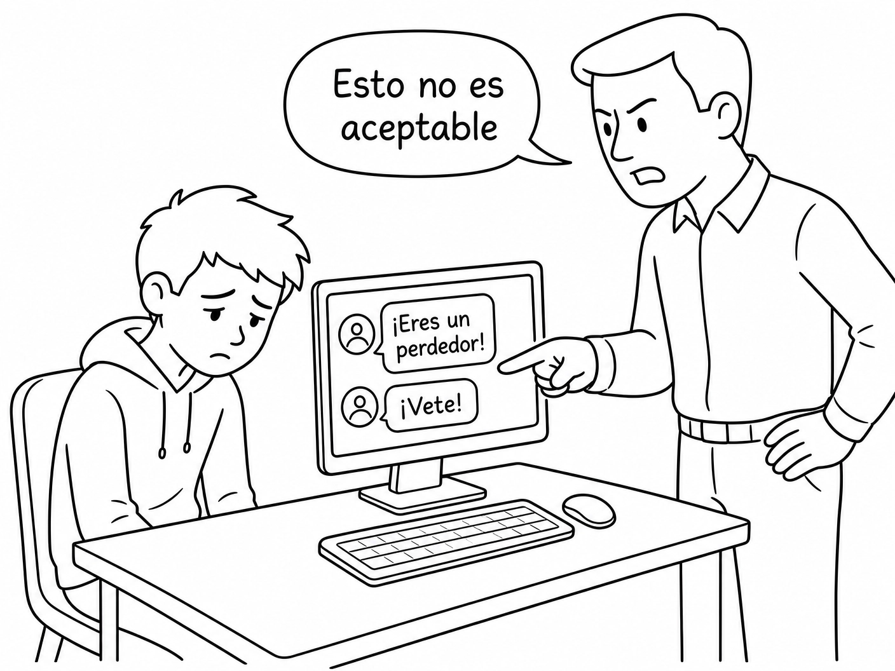

El ciberbullying puede tener graves consecuencias para las víctimas. Algunas de las consecuencias más comunes incluyen:
Las víctimas de ciberbullying pueden experimentar ansiedad, depresión, baja autoestima y sentimientos de soledad.
El acoso en línea puede afectar el rendimiento académico de las víctimas, ya que pueden sentirse distraídas o inseguras en la escuela.
Niña con problemas emocionales
Las víctimas de ciberbullying pueden tener dificultades para hacer amigos o mantener relaciones sociales saludables debido al miedo al acoso.
En casos extremos, el ciberbullying puede llevar a pensamientos suicidas o incluso a intentos de suicidio.
Recorda que el ciberbullying no solo afecta a las victimas sino que tambien a su entorno social.
Las consecuencias del ciberbullying no solo las tiene la victima sino que tambien los agresores y estos son:
Los agresores pueden tener consecuencias legales como Denuncias, multas, hasta carcel segun las normas locales.
Los agresores pueden tener consecuencias escolares como sanciones, suspensiones o expulsiones.

Niño siendo reprendido por sus actos
Los agresores pueden tener problemas mentales como dificultades para manejar la frustracion y abuso de poder. Esto a lo largo del tiempo tiene más probabilidades de consumir sustancias.
Los agresores pueden enfrentar consecuencias sociales, como la pérdida de amigos o la exclusión social debido a su comportamiento.
Conclusión
El ciberbullying tiene consecuencias para las dos partes involucradas. Por eso es mejor prevenirlo para que gente no tenga que vivir esas cosas.